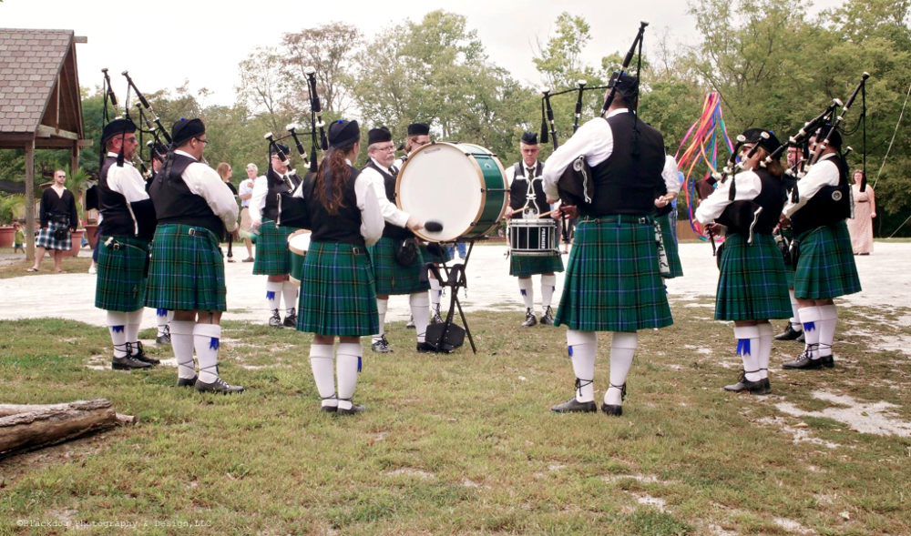

About the Band
The Louisville Pipe Band is in good standing and recognized by the Eastern United Pipe Band Association (EUSPBA) as a competitive and performing Grade Four and Grade Five Pipe Band based in Louisville, Kentucky. Members are drawn from throughout Kentucky and southern Indiana. The band performs at community and corporate events, weddings and festivals. We march in several parades each year including the Louisville St. Patrick's Day Parade and Worldfest Celebration on the Belvedere. The band successfully competes in several Highland Games each year and its individual members are often found among those placing in the top three in their respective solo competitions. The Band is a charitable non-profit corporation and is financially sustained by performance fees, private donations and corporate sponsorships to facilitate teaching programs and travel to competitions.
The Band's accomplishments include:
- Competing in the World Pipe Band Championships in Scotland
- Participating in the 10,000 Piper Millennium Parade in Edinburgh
- Presenting a concert at the Bomhard Theater in the Kentucky Center with special guest and world class solo bagpiper, Alasdair Gillies
- Playing at the opening and the closing ceremonies for the PGA Ryder Cup held at Valhalla Golf Club in Louisville, Kentucky